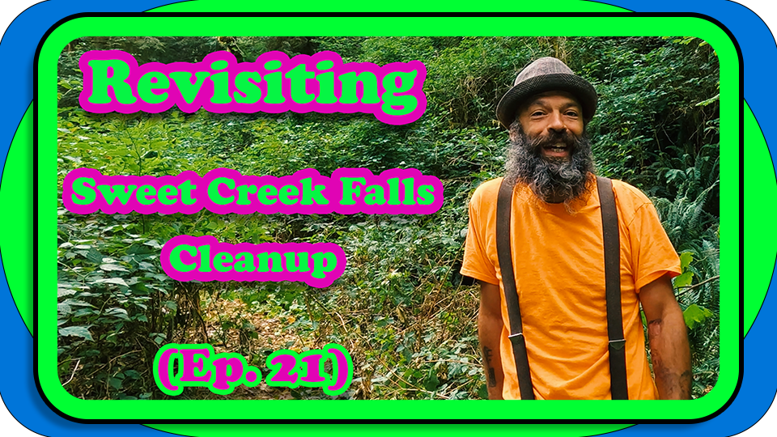
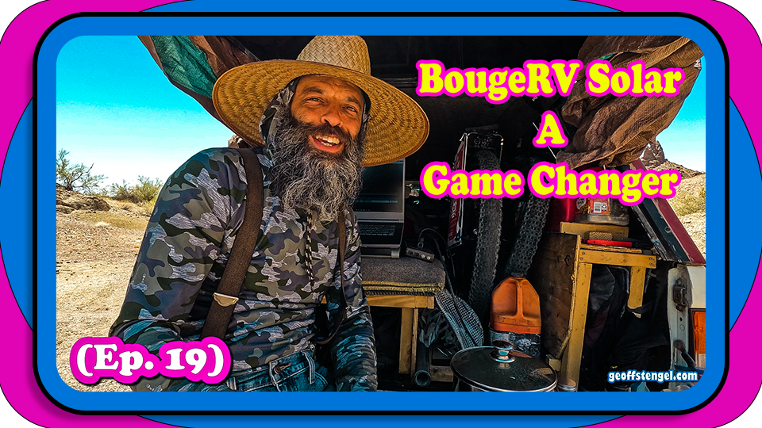

TRASH TOKEN ü™ô
To Restore And Save Habitats
üí° TRASH V2 ETH Contract Address: 0x93792e646ded3c397665d1cf6d93c0b9598957a2
What's TRASH Token? "To Restore And Save Habitats" TRASH. Some call it a Token because it was minted on the Blockchain. Or you could call it a Digital Badge of Support For The Nature Cleanups that holds an impeccable record of each transaction. So as Supporters you can see exactly what am spending on the Tire cleanups or track if or how many donations are coming in, and how those funds are being spent.
The Community can question spending as an example you could say "We see on Block number 21361050 $20 was spent what did that go to or why was Tokens sent out of that Wallet?" & someone could respond with "Oh that was for Trash bags and Latex Gloves from the Hardware store for the Ocean Beach Cleanup" or something. Pretty darn cool, it's all transparent for everyone to see on the Ethereum Blockchain.

My thoughts just rolling off my tongue to be blunt, this might not be the next Bitcoin But this shows us integrating crypto into an every day project as a regular Joe here! We are solving problems with it in this situation giving transparency to the funds giving supporters a bit of ease on how it's being spent, also making sure when Donations are sent from people that they're actually reaching us & the payment not get reversed for whatever reasons, which happened.
Also giving it more Utility by Rewarding people at times for cleaning up or Recycling Tires & you can give them a few TRASH Tokens. Token holders can vote on some of the Locations that we remove tires from on upcoming trips.
As a Supporter you have a chance to possibly benefit as well just by being an early supporter hodling "TRASH" if the value goes up (don't count on that but it could happen ya know NFA) than you can trade it on Uniswap or another Ethereum DEX Exchange, which still in a macro way helps out the "TRASH" project by generating fees. So i actually encourage for people to use or accept TRASH for even your NFTS for those that dabble. Imagine just by using a certain crypto you could be helping out the planet, causing old tires to be taken out of a river or a tree to be planted. You can use this Token many ways.

Above we mention Contract Address: 0x93792e646ded3c397665d1cf6d93c0b9598957a2 which is a record of this specific Token on the Blockchain of the Smart Contract, that with those series of numbers & letters you can view it on Etherscan & see the Token Functions & Abilities also keeps track of every transaction, of how many TRASH "Tokens" created, what the wallet address is, of who's in control or started the Token, etc.. You'll see on there Total Supply is 1,000,000 TRASH V2 which can be kinda volatile (we saw on V1) so proceed with caution if you're very early seeing this.
Previously had deployed TRASH V1 in 2024 but Bots scooped in & snatched 50% of Total Supply within 4 seconds, so it was an uneven playing field where they woulda been Whales and had control over the Token probably taking alll the money when they could. So i made the executive decision after asking the community and no response figured take the initiative and look out for future Supporters, start V2 release 250-3,000 Tokens at a time with a more even launch instead of releasing entire supply Day 1, which's how the last situation happened.
- 1. Twin Lakes, CO
- 2. Mapleton, OR
- 3. Cave Junction, OR
- 4. Quartzsite, AZ
- 5. Mojave, AZ
- 6. Mapleton, OR
- 7. Savage Creek, OR
- 8. Eight Dollar Mt, OR
‚ôªÔ∏è Cleaned up Locations üóëÔ∏è
Disclaimer also good time to say and lay my cards on the table am a new Developer over the last few yrs, so basically built & coded everything myself (expect mistakes here & there) with the help of the Community answering questions tho, along with the tools that are available. & running everything on a low budget while living outta my truck doing delivery apps to cover costs, so am trying to improve the liquidity a bit as well. Felt i should share that & ya know am not a big company
so not financial advice but only spend what you can afford to lose or plan to Donate, because as time goes on just guessing by seeing other projects experiences there will probably be bots if you're new to crypto & haven't seen those yet. The token can be Volatile due to low liquidity & low supply. just wanted to say that again. With the Purchase of TRASH Token you don't receive anything physical it's an online Digital Badge or Token that is held on the Blockchain. Only you have access to it and we can not recover any lost or stolen tokens, again only you have access to your wallet and we will never ask you for your Private Key or Seed Phrase so Don't give it away.

Common Questions:
1: Is there money involved? TRASH TOKEN is purchased with Ethereum on the Blockchain through a Decentralized Exchange a DEX. & after the transaction clears the TRASH TOKEN will be transferred to your crypto wallet automatically.
2: What's the cost? The cost varies depending on what the market value is on the Exchanges ie Dextools or Uniswap are a few examples. Basically Supply & Demand calculates that on how many coins are circulating & how much liquidity is in the pool.
3: Is it like Bitcoin? They're both Cryptocurrencies but on different Blockchains. Bitcoin is it's own Network & Ethereum is a separate one but they're both friends lol. TRASH TOKEN is essentially a baby from Ethereum, ETH would be the Mother because it's born/cloned from the Ethereum Blockchain. Which makes our Token an erc20 L2 Layer 2.
4: Do we Profit off TRASH Token? On Trading Fees we receive 1% of the "Pool" at the moment, but as time goes on we will earn less on that if more people are in the pool because they'll receive some of that 1%, but basically that'll go into maintaining the project and help fund the recycling of tires. Currently everything comes out of my pocket. This will help keep it Rollin, so just by holding or using TRASH TOKEN you are helping support the Cleanups. Thank you

Will be updating the stats on how many tires are being recycled each time so everyone can view the info here as well open to the public!! Which will be exciting to see the numbers grow, because a little at a time eventually grows to a mountain of tires removed!
Anyways Thank you for all the support, will add some more to this post shortly
~geoff stengel
Heres some links for my other projects, Youtube - BitcoinDavida Crypto Site - Github - Also The links are on Home Page

Youtube Eps:
(Ep. 15) Quartzsite Cleanup & Old Gold Mining Cabin Exploration ⛏️
(Ep. 20) Mohave Desert Cleanup - Part 2 üåµ
(Ep. 21) Revisiting Mapleton Cleanup
(EP. 19) BougeRV Solar Such A Game Changer!!
Lately been doin more Youtube videos to branch out, honestly cause i'm not the greatest at spelling & thought videos would be fun way to network with people. At first i didn't think was good at it when tried over the yrs. But as watching the videos & learning editing i seen so much improvement it's been a lot of fun. Also to, sometimes it even maybe uncomfortable, but i say rather do this & feel uncomfortable than deliver $1 coffees lol. You can view my earliest ones yrs ago in the playlist

Bitcoin Davida Crypto Info & Wallets:
One of the first sites i coded in 2016, possibly the Eugene Glass Menagerie site was before. anywho, over the yrs managed to have kept up with the site from time to time to keep it going, another project that with a bit of work here and there has grown into a nice place of knowledge.
The Directory (Links Page) has some of the best blockchain companies all together as if it was The Crypto Yellow pages from back in the day. It started from when i was getting into Bitcoin Atms and needed a website along with basically saying the same info over & over that figured maybe all that info could go together, the other inspirations was craigslist, at first the vision was the craigslist of crypto. who knows if that's still the idea lol, but i have palying the project and being involved in the crypto community.

Github GeoffStengel Profile:
Github is a place for Developers to share code & projects in an Opensource enviornment. This is an important section if your're intrested in getting a website from me in the future, github is where we will upload the code & have access to their servers from. So i wanted to have my profile available in a few spots so there's easy access for ya.